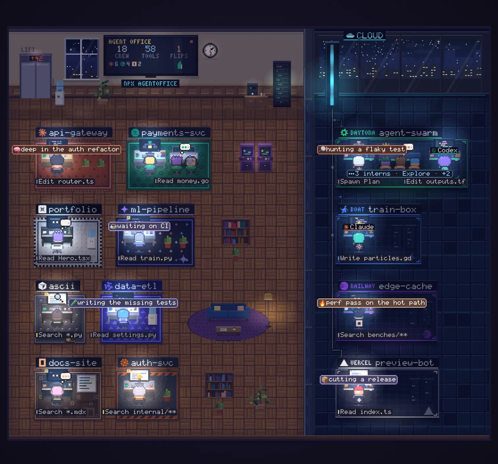
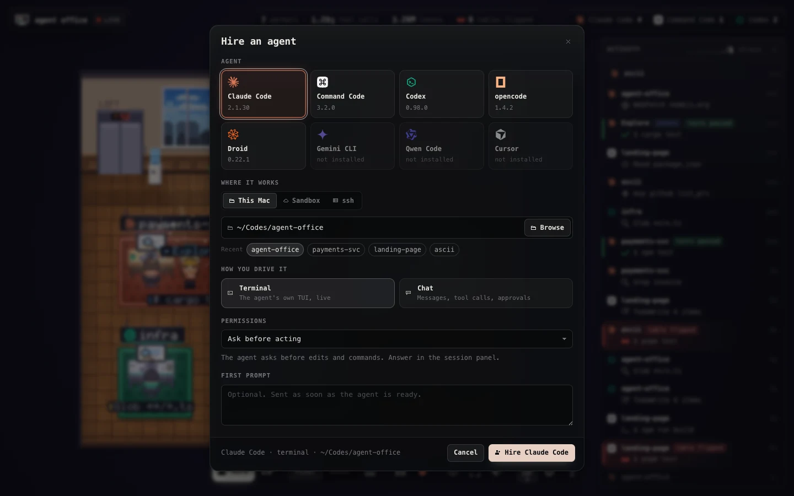
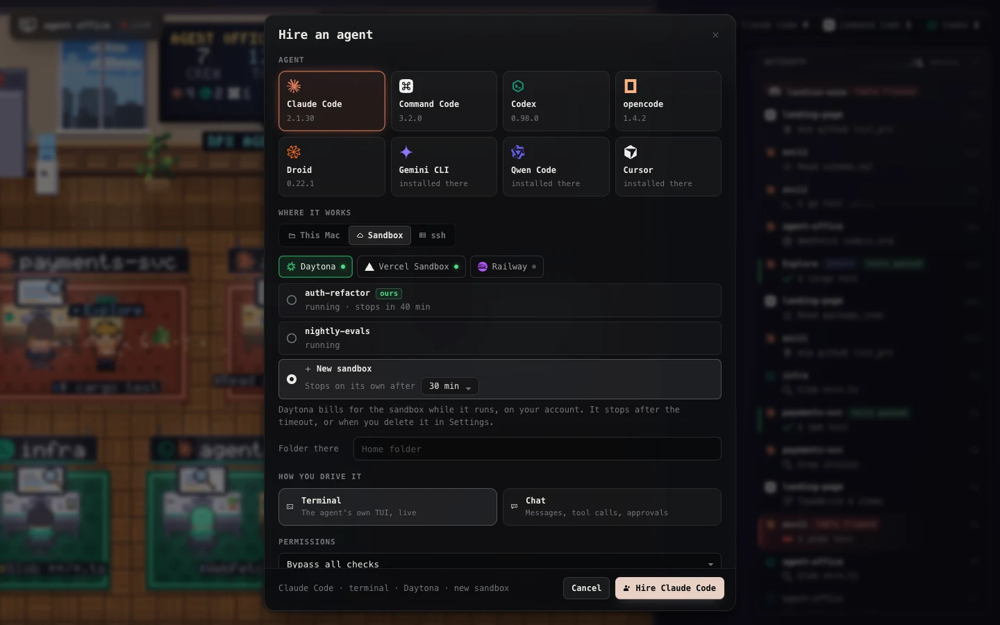
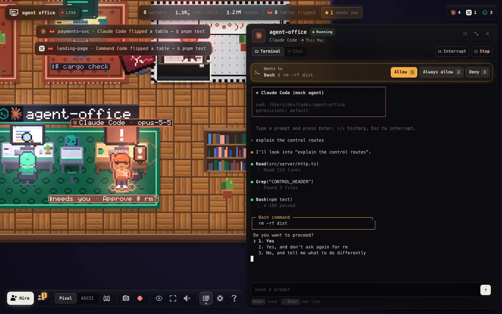
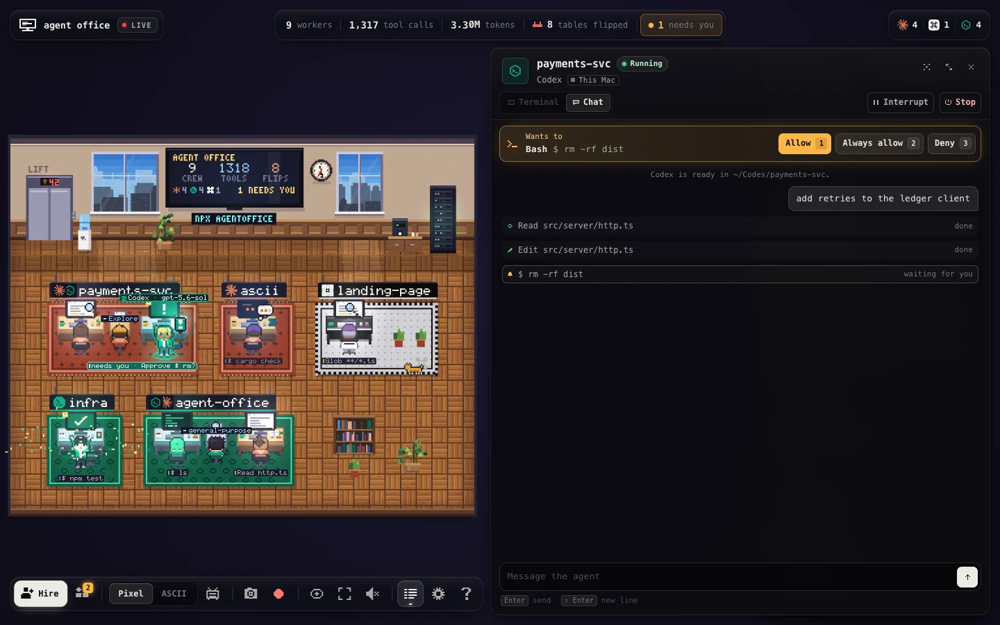

v{{version}} on npm · MIT · no runtime dependencies
agent office
your coding agents, working in a pixel office

--demo in your browser.
Claude Code, Codex, Command Code and five more agents, working in a live pixel-art office. On this machine, in Daytona, Vercel and Railway sandboxes, or over ssh. A failing test flips the table.
Node 18+. It opens 127.0.0.1:4747; start an agent in another terminal and it walks in. --demo gives you a busy simulated office.
Claude Code Codex Command Code opencode Cursor Droid Qwen Code Gemini CLI
02 · moments on demand
what you're looking at
Every session is a worker at a desk. Hover a lineTap a line and it happens in the office.
comings and goings
at the desk
interns
waiting on you
trouble, and the fix
agents talking back (mcp)
One pod per project: two agents on the same repo share it, each desk in its own agent's colours. The wall TV keeps score, the office follows your clock from morning to night, it rains now and then, and there is a cat.
03 · the control plane coming in the next release
hire and drive agents from the page
Press Hire, pick an agent, a folder (or a sandbox, or an ssh box) and a first prompt, and a worker walks in. Its desk opens a panel with the agent's own TUI in a real terminal, so everything the agent can do in a terminal works there.

Pick one of eight agents, where it works, how you drive it, its permission mode and an optional first prompt.

A new sandbox, or one that's already running. A new one stops on its own after its lifetime; the office never extends it.

The agent's own TUI, live, next to its desk. Its permission question gets buttons on the page.

Chat mode: replies, tool calls with the office's redacted labels, approvals as buttons. 1 Allow, 2 Always allow, 3 Deny.
-
here, or there
This Mac, a new or running Daytona, Vercel or Railway sandbox, or an ssh box. A new sandbox lives 30 minutes unless you pick another lifetime, and the office keeps at most three of its own.
-
a real terminal
The agent's own TUI with a prompt box, Interrupt and Stop. It runs on the optional
@lydell/node-pty, prebuilt, which npm installs with the office. -
chat, with approvals
The headless protocol of Claude Code, Codex and opencode, shown as a conversation. Tool calls ask first, and you answer from the page.
-
locked by default
Watching needs nothing; driving needs an unlocked browser. The one-time unlock link is opened, never printed, so it can't end up in a recording.
04 · sandboxes and ssh boxes
the cloud wing
Agents in cloud sandboxes or on another machine sit in a glass-walled cloud wing next to the office, one pod per sandbox, its sign naming the platform. Nothing is installed on the remote: the office runs plain POSIX sh through the platform's own exec and reads the transcripts there, exactly as it does locally.
-
Vercel Sandbox
testedVERCEL_TOKEN/VERCEL_OIDC_TOKEN, or thenpx sandboxCLI's login -
Daytona
testedDAYTONA_API_KEY, or thedaytonaCLI's login -
Railway Sandboxes
testedRAILWAY_API_TOKEN, or therailwayCLI's login -
any ssh box
betayour own
ssh,BatchMode=yes, one multiplexed connection -
boat
untestedBOAT_API_KEY, or theboatCLI; only with--boat
auto-detect, in your own scope
On start the office looks for those keys and logins (files and environment only) and watches the running sandboxes in your own scope, so a teammate's sandbox never ends up in your recording. A quiet poll is one exec of a few hundred bytes; idle Daytona and Railway sandboxes are left alone so they can still auto-stop.
--vercel [name]--daytona [id]--railway [id]- watch these; no value means every running one the login can see
--ssh <host>- an alias,
user@hostorssh://user@host:port; repeatable --no-cloud--local-only- no auto-detect; this machine only
claude in a vercel sandbox, in your office
# once; the office reuses this login
$ npx sandbox@latest login
# a fresh sandbox, removed when you exit
$ npx sandbox@latest sh --rm
# inside it
$ claudeClaude Code signs in separately inside the sandbox. On your machine, npx theagentoffice finds the sandbox and the worker beams into the cloud wing.
05 · mcp + skill
agents talk back
agentoffice mcp is a zero-dependency MCP server with five tools, and a short skill teaches agents when to use them.
office_status {text, mood?}The status line and emoji floating over the agent's head.
office_peers {}Who else is working right now and which files they just edited, with a heads-up before two agents edit the same file.
office_shout {text}A milestone on the office TV and in a toast. Rate-limited.
office_celebrate {reason?}Confetti at the agent's desk.
office_flip {reason?}The agent flips its own table, in its own words. Once every 2 minutes per repo.
install into every agent at once
# the plan, and the exact diff of every file
$ npx theagentoffice install --dry-run
# do it
$ npx theagentoffice install
# what's installed where, and is the office running
$ npx theagentoffice doctor
# every file back the way it was
$ npx theagentoffice uninstallIt uses each agent's own mechanism (claude mcp add, codex mcp add, or its MCP JSON, plus its skills folder), touches only the agents it finds, backs up every file first, and keeps your comments and formatting. Re-running is a no-op. Add --vercel all or --ssh me@gpu-box to install inside sandboxes and boxes too.
Everything an agent sends is scrubbed before it reaches the screen: paths become file names, URLs become host names, anything that looks like a secret becomes •••.
06 · privacy
built to be screen-recorded
Leave it open on a second screen, put it on a stream, post a clip. What reaches the page is a label, never your code.
local only
The server binds
127.0.0.1, rejects foreignHostheaders and cross-site requests, and sends a strict CSP.watching is read-only
It never writes to your agents' transcripts or configs. Only
installtouches configs, and only when you ask.nothing leaves your machine
Except the calls to the sandbox platforms and ssh boxes you're logged in to or configured. No telemetry, no CDN; it works offline.
labels, not content
"Edit auth.ts", "$ npm test". Never prompt text, file contents, command arguments past the subcommand, or anything that looks like a key. Home shows as
~, IPs are masked.
clip that
Something good just happened? The office keeps a rolling buffer and saves the last ~15 seconds as a clip, with a caption for the moment burned in. Shift+R records the next 10.
stream mode
Hides the chrome; the camera cuts in on every flip, shout and arrival, with letterbox bars and a caption.
- A pixel or ASCII
- C CRT scanlines
- S PNG screenshot
- F fullscreen
- M sound, off by default
- \ the activity feed
- ? every shortcut
07 · how it works
how it works
~/.claude ~/.codex ~/.commandcode opencode.db ... sandboxes / ssh boxes
\ | | / (same reads, over sh)
ingest: one small parser per agent <──────────────────────┘
│ "worker X started Edit auth.ts"
state: re-redacts; who's here, who quit (ps), who went quiet
│ Server-Sent Events on 127.0.0.1
browser: Canvas 2D office drawn at pixel resolution, scaled crispone command
The CLI tails transcript folders, backfills sessions active in the last 30 minutes, and watches which agent processes are running, so a worker walks in when its agent starts and leaves when it quits.
no runtime dependencies
No framework: one bundled
dist/cli.jsand one bundled web app. The page you're reading is built the same way, from the same scene.drawn at pixel resolution
The office is painted at true pixel-art resolution into an offscreen buffer and scaled up crisp. Labels, ASCII mode and CRT are passes on the same canvas, so screenshots and clips include them.
08 · questions
faq
Does it send my code anywhere?
No. What reaches the browser is an action and a file name, like "Edit auth.ts" or "$ npm test": never prompt text, file contents or anything that looks like a key. The server binds 127.0.0.1, there is no telemetry and no CDN, and it works offline. The only calls out are to the sandbox platforms and ssh boxes you're logged in to or configured.
Do I have to set anything up?
No. Run npx theagentoffice with Node 18 or newer and start an agent in another terminal: it walks in. Each agent's transcripts are read from their usual folder; AGENT_OFFICE_<AGENT>_DIR points one at another folder, and remotes you always want go in ~/.agentoffice/config.json.
Which agents does it watch?
Claude Code, Codex, Command Code, opencode, Cursor (cursor-agent), Droid, Qwen Code and Gemini CLI. All but Gemini CLI are tested against real transcripts on a real machine; Gemini CLI is built from its recorder source and untested on real data. Cursor records no tool results, so it can't show a pass or a fail. Formats drift between versions: if your agent stops showing up, open an issue with its version.
Does it touch my agents' files?
Watching is read-only. Only npx theagentoffice install touches configs, when you ask: it shows the exact diff with --dry-run, backs up every file first, and uninstall puts every file back.
How does it know a test failed?
From the transcript: a test command whose result came back as a failure is a test_fail, and the worker flips the table. A passing run gets a cheer and a green monitor. Agents can also flip their own table through office_flip, in their own words.
Can I put it on a stream?
That's what it's for. R saves the last ~15 seconds as a clip, H turns on stream mode, S takes a PNG. Labels never carry prompt text or keys, your home directory shows as ~, and sandbox auto-detect only watches your own scope, so a teammate's sandbox never ends up in your recording. --demo --seed <n> gives you a busy office that replays the same way every time.
Is the office on this page real?
Yes. It's the same scene the CLI serves, driven by the same --demo simulator and the same office state, running in your browser. Nothing on this page reads your agents; every worker here is invented.
What does it cost?
Nothing; it's MIT licensed. If you use it, a link back is appreciated, and so is a star. Sandboxes you watch or hire bill on your own platform account, as they always do.
Get started
Give your agents an office.